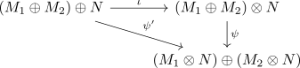
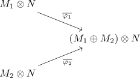

distributivity of the tensor product
Prposition
Let $R$ be a commutative ring and $M_1,M_2,N,$ \(R\)-modules Then for the tensor product and the direct sum it holds,
\begin{align*}
(M_1 \oplus M_2) \otimes_{R} N \cong& \left(M_1 \otimes_{R} N \right) \oplus \left(M_2 \otimes_{R} N\right)
\end{align*}
Proof
a)
Let
\begin{align*}
\psi': (M_1 \oplus M_2) \oplus N \rightarrow& (M_1 \otimes N) \oplus (M_2 \otimes N) \\
(m_1,m_2), n \mapsto& (m_1 \otimes n), (m_2 \otimes n)
\end{align*}
It is bilinear:
\begin{align*}
\psi'(r_1 \cdot (m_1,m_2), r_2 \cdot n) =& \psi'((r_1 \cdot m_1, r_1 \cdot m_2), r_2 \cdot n) \\
=& (r_1 \cdot m_1) \otimes (r_2 \cdot n), (r_1 \cdot m_2) \otimes (r_2 \cdot n) \\
=& (r_1 \cdot r_2 (m_1 \otimes n), r_1 \cdot r_2 (m_2 \otimes n)) \\
=& (r_1 \cdot r_2) \cdot (m_1 \otimes n, m_2 \otimes n)
\end{align*}
and
\begin{align*}
\psi'((m_1,m_2) + (m_1',m_2'), n + n') =& \psi'((m_1 + m_1',m_2 + m_2'), n + n') \\
=& (m_1 + m_1' \otimes n + n'), (m_2 + m_2' \otimes n + n') \\
=& ((m_1 \otimes n) + (m_1' \otimes n) + (m_1 \otimes n') + (m_1' \otimes n'), (m_2 \otimes n) + (m_2' \otimes n) + (m_2 \otimes n') + (m_2' \otimes n')) \\
=& \left((m_1 \otimes n), (m_2 \otimes n)\right) + \left((m_1 \otimes n'), (m_2 \otimes n')\right) + \left((m_1' \otimes n),(m_2' \otimes n)\right) + \left((m_1' \otimes n'), (m_2' \otimes n')\right) \\
=& \psi'((m_1,m_2), n) + \psi'((m_1',m_2'), n) + \psi'((m_1,m_2), n') + \psi'((m_1',m_2'), n')
\end{align*}
Hence there is an induced linear map
\begin{align*}
\psi: (M_1 \oplus M_2) \otimes N \rightarrow& (M_1 \otimes N) \oplus (M_2 \otimes N) \\
(m_1,m_2) \otimes n \mapsto& (m_1 \otimes n), (m_2 \otimes n)
\end{align*}

b)
Let
\begin{align*}
\varphi_1: M_1 \oplus N \rightarrow& (M_1 \oplus M_2) \otimes N \\
(m_1,n) \mapsto& (m_1,0) \otimes n \\
\varphi_2: M_1 \oplus N \rightarrow& (M_1 \oplus M_2) \otimes N \\
(m_2,n) \mapsto& (0,m_2) \otimes n
\end{align*}
be bilinear maps. Then there exist induced maps

Let
\begin{align*}
\varphi: (M_1 \otimes N) \oplus (M_2 \otimes N) \rightarrow& (M_1 \oplus M_2) \otimes N \\
(m_1 \otimes n_1), (m_2 \otimes n_2) \mapsto& \overline{\varphi_1}(m_1,n_1) + \overline{\varphi_2}(m_2,n_2) \\
(m_1 \otimes n_1), (m_2 \otimes n_2) \mapsto& (m_1,0) \otimes n_1 + (0,m_2) \otimes n_2
\end{align*}
It is a homomorphism (todo ?)
inverse
Since the elementary tensors generate the tensor product, it suffices, to calculate:
\begin{align*}
(\varphi \circ \psi)((m_1,m_2) \otimes n) =& \varphi((m_1 \otimes n), (m_2 \otimes n)) \\
=& (m_1,0) \otimes n + (0,m_2) \otimes n \\
=& (m_1,m_2) \otimes n
\end{align*}
and
\begin{align*}
(\psi \circ \varphi)\left((m_1 \otimes n), (m_2, \otimes n)\right) =& \psi((m_1,0) \otimes n + (0,m_2) \otimes n) \\
=& \psi((m_1,m_2) \otimes n) \\
=& (m_1 \otimes n), (m_2 \otimes n)
\end{align*}